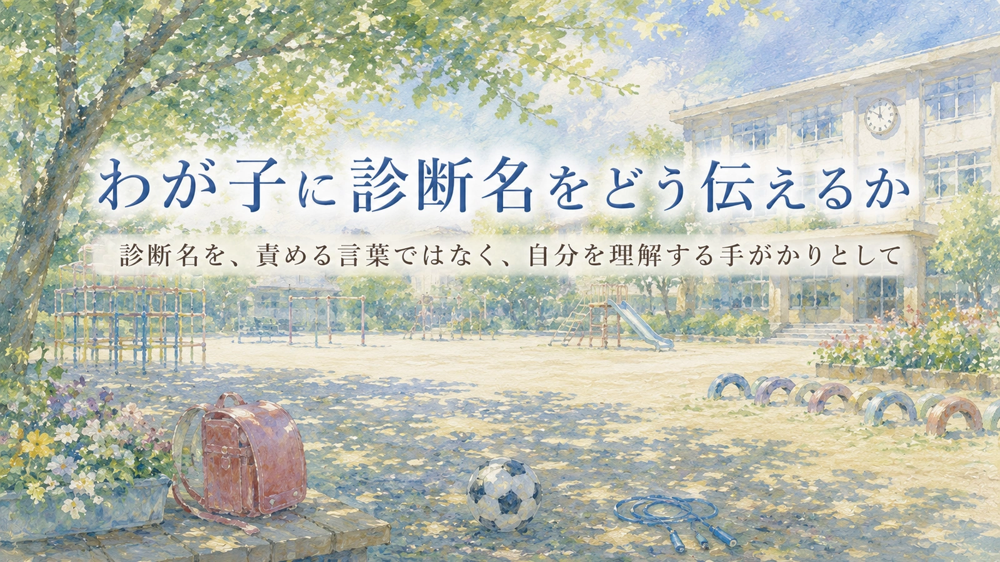

子どもに診断名を伝えるべきか。伝えるなら、いつ、どんな言葉で伝えればよいのか。 保護者にとって、とても迷うテーマです。 「障害」と言ったら、子どもが自分を嫌いにならないか。 「だから自分はだめなんだ」と思わないか。 反対に、伝えないままで、本人だけが「自分はなぜみんなと違うのか」と苦しみ続けないか。 この記事では、診断名を“子どもを決めつける札”ではなく、 自分を理解し、助けを求め、安心して学ぶための言葉として伝える方法を考えます。
1. 診断名を伝えるかどうかで迷う保護者へ
診断名を子ども本人に伝えるかどうかは、簡単に決められることではありません。 伝えたほうがよいとわかっていても、保護者は不安になります。
「障害」と言われた子どもが、自分を否定的に見ないだろうか。 支援を受けることを恥ずかしいと思わないだろうか。 診断名を理由に、努力しなくならないだろうか。 きょうだいや友達にどう説明すればよいのだろうか。 そうした心配は、保護者として自然なものです。
ただ、子どもは大人が思う以上に、周囲との違いに気づいていることがあります。 自分だけ別室に行く。自分だけ先生と確認する。自分だけ宿題が違う。 友達関係で同じ失敗を繰り返す。注意される回数が多い。 その理由が何も説明されないと、子どもは自分なりに理由を作ってしまうことがあります。
「自分は悪い子だから」
「自分はみんなよりだめだから」
「自分だけおかしいから」
診断名を伝える目的は、子どもを傷つけることではありません。 本人が、自分の困りやすさと付き合うための言葉を持つことです。
2. 診断名は、子どもを決めつける札ではない
診断名は、子どものすべてを説明するものではありません。 同じ診断名でも、困り方、得意なこと、苦手なこと、必要な支援は一人ひとり違います。
たとえば、自閉スペクトラム症という診断名があっても、 ある子は予定変更が苦手で、別の子は音やにおいがつらく、 また別の子は友達との距離感に困っているかもしれません。 ADHDという診断名があっても、落ち着きにくさが目立つ子もいれば、 忘れ物や見通しの持ちにくさで困る子もいます。
そのため、子どもに伝えるときは、診断名だけを先に置かないほうがよいことがあります。 診断名より先に、 本人が日常で感じている困りごとと、 何があると楽になるかを言葉にします。
診断名は、子どもに貼る札ではありません。 「あなたはこういう子」と決めつけるための言葉でもありません。 本人が自分を理解し、必要な助けを受け取り、自分に合う方法を探すための言葉です。
3. 「あなたは障害だから」だけでは足りない
子どもに診断名や障害のことを伝えるとき、 もっとも避けたいのは、 「あなたは障害だから」 という言葉だけで終わってしまうことです。
その言葉だけでは、本人には何をすればよいのかわかりません。 なぜ自分が別室に行くのか。 なぜ予定を先に確認すると落ち着くのか。 なぜ強い言葉を使うと相手が傷つくのか。 なぜ困ったときに大人へ相談してよいのか。 そこまでつながらなければ、診断名は本人の役に立ちにくくなります。
伝えたいのは、次のような内容です。
- あなたには、得意なことと苦手なことがある
- 苦手なことは、努力不足だけではない
- 困りやすい場面には、理由がある
- 合う方法を使うと、過ごしやすくなる
- 支援を受けることは、ずるいことではない
- 相手を傷つけたときは、特性とは別に修復が必要
- あなたには、よいところも力もある
診断名を伝えることは、本人を特別扱いの中に閉じ込めることではありません。 本人が、自分に合う方法で社会や学びに参加していくための入口です。
4. 診断名だけでは、行動の地図にはならない
ある学校で、相手を傷つける強い言葉が多く、集団の中でトラブルになりやすい子がいました。 知的な遅れは目立たず、言葉の力もありました。 本人は、大人から「自分には支援が必要らしい」と聞いており、 自分が少し特別な場所や関わりを使っていることも、何となく理解していました。
しかし、それだけで日々の行動が落ち着いたわけではありませんでした。 強く叱っても、その場では響いているように見えにくく、 同じような言葉や行動が繰り返されることがありました。
その子に有効だったのは、診断名や障害名を繰り返し説明することだけではありませんでした。 朝や前日に担任と日課を確認し、 今日はどの時間をどこで過ごすのか、 どの活動に参加するのか、 困ったときに誰と確認すればよいのかを、 あらかじめ見通せるようにすることでした。
すると、少しずつ穏やかに過ごせる時間が増えていきました。 これは、「支援を受けているから何をしても許される」という話ではありません。 本人が自分を保てる条件を整えたことで、 ようやく次の学びや人との関わりに向かう土台ができた、ということです。
診断名だけでは、子どもの行動の地図にはなりません。 必要なのは、 「自分はどの場面で崩れやすいのか」 「何があると落ち着けるのか」 「困ったときに何を確認すればよいのか」 を、大人と一緒に言葉にしていくことです。
5. 伝える前に、大人が整理しておきたいこと
子どもに診断名を伝える前に、まず大人側が言葉を整理しておく必要があります。 大人が混乱したまま伝えると、子どもには不安だけが残ることがあります。
| 整理すること | 考えるポイント |
|---|---|
| 伝える目的 | 本人を納得させるためか、自己理解を助けるためか、支援を受けやすくするためか |
| 本人がすでに気づいていること | 自分だけ違う、叱られやすい、別室に行く、友達とうまくいかないなど |
| 本人の困りやすい場面 | 予定変更、音、集団活動、友達関係、宿題、給食、朝の準備など |
| 本人の強み | 集中力、記憶力、発想、正義感、好きなことへの熱中、人への優しさなど |
| 使える支援 | 予定表、短い指示、休憩場所、通級、別室、相談できる大人、家庭での工夫など |
| 伝える人 | 保護者、医師、心理士、学校の先生など。誰が話すと本人が受け止めやすいか |
診断名を伝える場面では、正確な説明も大切ですが、 それ以上に、本人が 「自分は見捨てられていない」 「大人は自分の味方として話している」 と感じられることが重要です。
6. 年齢に応じた伝え方
診断名の伝え方は、年齢や発達段階によって変わります。 一度で全部を説明する必要はありません。 子どもの理解に合わせて、少しずつ言葉を増やしていきます。
| 時期 | 伝え方の例 | 大切にしたいこと |
|---|---|---|
| 幼児期から低学年 | 「音が大きいと疲れやすいね」「予定がわかると安心しやすいね」 | 診断名より、体験に近い言葉で伝える |
| 中学年 | 「あなたには得意なことと、助けがあると楽になることがある」 | 自分だけ違う理由を、否定ではなく説明として伝える |
| 高学年 | 「診断名は、あなたを決めつける言葉ではなく、合う方法を探すための言葉だよ」 | 本人の疑問や反発も受け止める |
| 思春期 | 「これまでしんどかった理由を、一緒に整理したい」 | 本人の尊厳とプライバシーを守りながら話す |
年齢が上がるほど、本人は「自分で知りたい」「勝手に決められたくない」という気持ちを持ちやすくなります。 そのため、思春期以降は特に、説明するだけでなく、本人がどう受け止めているかを聞くことが大切です。
7. 診断名より先に伝えたい言葉
子どもにとって役に立つのは、診断名そのものよりも、 日常の中で使える言葉です。 自分の状態を説明できる言葉があると、困ったときに助けを求めやすくなります。
| 伝えたいこと | 子どもに届きやすい言い方 |
|---|---|
| 予定変更が苦手 | 「急に変わると、頭がびっくりしやすいんだね。先に予定を見られると安心しやすいね」 |
| 音やにおいがつらい | 「みんなより強く感じる音やにおいがあるんだね。つらいときは休む方法を使おう」 |
| 言葉が強くなりやすい | 「言いたいことが強い言葉で出ることがあるね。次に使う言葉を一緒に決めよう」 |
| 切り替えが難しい | 「楽しいことを急に止めるのが苦手なんだね。終わりの合図を先に決めよう」 |
| 失敗が怖い | 「間違えるのがすごく怖くなるんだね。小さく始める方法を使おう」 |
| 助けを求めにくい | 「困ったときに言葉で言うのが難しいなら、カードや合図を使ってもいいよ」 |
こうした言葉は、診断名を隠すための言い換えではありません。 診断名を、日常の支援に変換するための言葉です。
8. 安心できる場所は、甘やかしではなく足場
子どもに支援の場を用意すると、 「楽を覚えるのではないか」 「甘やかしになるのではないか」 「このまま社会に出られなくなるのではないか」 と心配されることがあります。
たしかに、支援が本人の責任をすべて免除する形になってしまうと、 次の成長につながりにくい場合があります。 しかし、安心できる場所を作ることそのものは、甘やかしではありません。
常に緊張し、防衛し、攻撃的になり、見通しが持てない状態では、 子どもは学びや人との関わりに向かいにくくなります。 まず安心できる。 何をすればよいかがわかる。 困ったときに戻れる場所がある。 その土台があって、初めて責任や練習を積み上げられることがあります。
たとえ本人が一時的に「ここなら楽だ」と感じたとしても、 そこから日課を確認し、言葉の使い方を練習し、通常の学級や集団との接点を少しずつ作っていけるなら、 それは逃げ場ではなく足場です。
支援は、本人を甘やかすためのものではありません。 本人が自分を保ち、次の一歩を選べる状態を作るためのものです。
9. 伝えた後に必要な支援
診断名を伝えたら終わりではありません。 むしろ、伝えた後こそ大切です。 子どもは、聞いた言葉をすぐに整理できるとは限りません。
伝えた後には、次のような支援が必要になります。
伝えた後に見たいこと
- 本人が診断名をどう受け止めているか
- 「自分はだめ」と思っていないか
- 診断名を理由に、すべてを諦めていないか
- 逆に、診断名を理由に相手を傷つける行動を正当化していないか
- 自分の得意なことも言葉にできているか
- 困ったときに使える方法があるか
- 学校と家庭で同じ説明ができているか
とくに大切なのは、 「診断名があるから何をしてもよい」 ではなく、 「困りやすい理由があるから、合う方法を使って次の行動を学ぶ」 と伝えることです。
相手を傷つけたときは、診断名とは別に、謝る、距離を取る、次に使う言葉を練習するなどの修復が必要です。 支援と責任は、対立するものではありません。 支援があるからこそ、責任の取り方を具体的に学べる子もいます。
10. 伝え方の文例
診断名を伝えるときは、子どもの年齢や状態に合わせて言葉を選びます。 ここでは、そのまま使える短い文例を示します。
低学年向け
「あなたには、得意なことと、少し助けがあると楽になることがあるよ。 予定がわかると安心しやすいし、大きな音は疲れやすいね。 だから、先に予定を見たり、疲れたら休む方法を使ったりしているよ。」
中学年向け
「あなたが困っていることは、努力していないからだけではないよ。 頭や体の感じ方に、あなたの特徴がある。 診断名は、あなたを決めつける言葉ではなく、合う方法を探すための言葉だよ。」
高学年・思春期向け
「これまで、集団や予定変更、友達とのやり取りでしんどいことがあったと思う。 その理由を一緒に整理するために、診断名という言葉がある。 それは、あなたがだめだという意味ではない。 自分に合う環境や助け方を知るための手がかりだよ。」
診断が未確定の場合
「まだ名前がはっきり決まっているわけではないけれど、 あなたが困りやすい場面は一緒にわかってきているよ。 急な変更や大きな音、友達との距離で疲れやすいことがある。 名前があるかどうかに関係なく、楽になる方法は一緒に考えられるよ。」
本人がショックを受けたとき
「びっくりしたよね。 すぐに受け止めなくていいよ。 でも、これはあなたを責めるための話ではないよ。 これまで大変だった理由を一緒に整理して、これから少し楽にするための話だよ。」
11. 家庭で整理しておきたいメモ
子どもに伝える前に、家庭で次のようなメモを作っておくと、言葉が整いやすくなります。
メモの目的は、完璧な説明を作ることではありません。 子どもに渡す言葉を、傷つける言葉ではなく、支える言葉に整えることです。
12. 避けたい言葉と、置き換えたい言葉
診断名を伝える場面では、短い言葉ほど子どもの中に残ります。 だからこそ、言い方には注意が必要です。
| 避けたい言葉 | 置き換えたい言葉 |
|---|---|
| 「あなたは障害だから」 | 「あなたには、困りやすい場面と、合う方法がある」 |
| 「普通の子とは違う」 | 「感じ方や考え方に、あなたの特徴がある」 |
| 「だからできなくても仕方ない」 | 「合う方法を使って、できる形を探そう」 |
| 「診断があるから許される」 | 「困りやすい理由はある。でも相手を傷つけたら修復は必要だよ」 |
| 「一生治らない」 | 「苦手さが残ることはある。でも、楽にする方法や助けを使う力は育てられる」 |
| 「恥ずかしいことではないから気にしないで」 | 「気になる気持ちがあってもいいよ。一緒に考えよう」 |
子どもに必要なのは、きれいごとの励ましだけではありません。 自分の困りごとを否定せず、同時に自分の可能性も失わない言葉です。
まとめ：診断名は、子どもを閉じ込める言葉ではなく、開く言葉にする
わが子に診断名をどう伝えるかは、保護者にとって重いテーマです。 傷つけたくない。自己否定してほしくない。 でも、本人が理由のわからない困りごとを一人で抱え続けることも避けたい。 その迷いは自然なものです。
大切なのは、診断名を「あなたは障害だから」と伝えることではありません。 「あなたには困りやすい場面がある」 「でも、それには理由がある」 「合う方法を使うと過ごしやすくなる」 「助けを求めることは恥ずかしいことではない」 と、本人が自分を理解する言葉にしていくことです。
診断名だけでは、行動の地図にはなりません。 本人がどの場面で崩れやすいのか。 何があると落ち着けるのか。 困ったときに誰と確認すればよいのか。 そこまで一緒に言葉にして、初めて診断名は支援の入口になります。
支援は甘やかしではありません。 安心できる足場があるからこそ、子どもは学び、関わり、修復し、次の一歩を選べるようになります。 診断名を、子どもを閉じ込める言葉ではなく、 自分を理解し、自分に合う方法を探すための言葉にしていきましょう。
診断名や支援のことを、子どもにどう伝えればよいか迷うときは、一人で抱え込まなくて大丈夫です。 まなびの森教育研究所では、家庭で見えている困りごとを整理し、学校や関係機関と共有しやすい言葉に整えるお手伝いをしています。
保護者向け相談ページを見る